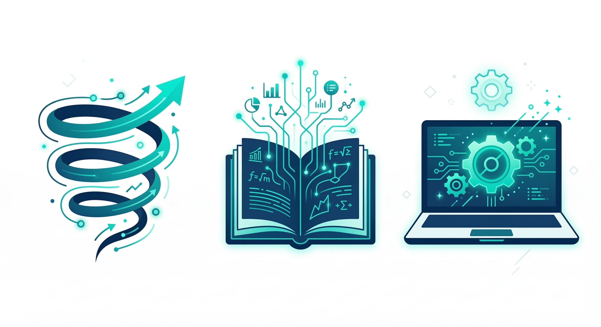

Bienvenidos
al taller de Introducción a la IA
Evolución y Uso de Agentes
Agenda del taller
- Dinámica Rompehielo
La Evolución - Fundamentos Teóricos
Duración: 15 - 20 min - Laboratorio Práctico
Creación de un Agente (1 hr)

Dinámica: La Evolución
De organismo simple a humano
Encuentra a un igual, juega Piedra, Papel o Tijera. El ganador muta al siguiente nivel.

El ritmo de la humanidad
Durante siglos, el progreso acompañó el ritmo de los cambios políticos y científicos.
de vapor
Francesa
VZLA
Guerra
"IA"
former
Autónomos
Brattain(1947)

Soberanía de cómputo: El nuevo poder
Del "Estatus Arquitectónico" a la Infraestructura Estratégica
Hoy, un centro de datos con 100,000 GPUs es más estratégico geopolíticamente que un puerto o una represa.
El tablero de juego actual
De la infraestructura a la soberanía de los datos
Microsoft
Valor: ~$3.1 Trillones
Líder en infraestructura B2B. Domina la distribución de agentes con el ecosistema Copilot.
Valor: ~$3.8 - $4.0 Trillones
Arquitectos del Transformer. Gemini domina el contexto masivo en Workspace corporativo.
OpenAI
Valor: ~$300 - $500 Billones
Pioneros en modelos de razonamiento. Son el motor intelectual de mayor adopción actual.
Anthropic
Valor: ~$183 - $350 Billones
Foco absoluto en seguridad e IA ética (Claude). Es el estándar de oro para alta regulación.
IA Soberana (Meta, Mistral, Qwen)
Valor Meta: ~$1.7 Trillones
Código Abierto: Permite a las empresas descargar los modelos y alojarlos en servidores propios. Garantiza que la data jamás salga de la red corporativa, eliminando la dependencia a un solo proveedor tecnológico.
El Foso Defensivo (Databricks, Snowflake)
La Capa de Datos: El algoritmo se está comoditizando y volverá accesible a todos. La verdadera y única ventaja competitiva de las organizaciones radica en la calidad, estructura y gobierno de sus almacenes de datos internos.
Entendamos los fundamentos
Dos tipos de algoritmos para hablar el mismo idioma
1. Algoritmo Clásico (Receta)

Programación manual: "Si pasa A, entonces haz B". Rígida y limitada por lo que el humano logre prever en el código.
2. Machine Learning (Evolución)

Sistemas que aprenden solos a través de la experiencia y los datos. Se establecen metas, la máquina descubre el camino óptimo.
¿Les suena familiar?
La Evolución en la Práctica
Hace unos minutos simularon un algoritmo de Machine Learning en la vida real.
- Valores Semilla: Todos ustedes al inicio (organismos simples).
- Función de Evaluación: Piedra, papel o tijera.
- Convergencia: Chocar, aprender, mutar, hasta llegar al "Humano" óptimo.
El motor de predicción
¿Cómo "habla" la IA? Matemática, no magia.
El algoritmo no entiende español, calcula estadísticamente la probabilidad de la siguiente palabra.
El Entrenamiento Iterativo (El Bucle):
¿Cómo aprendió nuestro idioma chocando millones de veces?
(Fallo ➔ Ajusta matemática)
(Fallo ➔ Ajusta matemática)
(Éxito ➔ Convergencia)
El cerebro matemático
Billones de Nodos y la "Caja Negra"

El patrón de activación del cerebro humano es un proceso biológico emergente y distribuido.

La conexión de millones de nodos genera un cálculo interno que funciona como caja negra.
De chats a agentes
La aceleración en la última década ha comprimido la innovación.
- Hasta 2021: El Predictor Ciego
Completadores de texto limitados a su fecha de entrenamiento. - 2022: La Memoria (ChatGPT)
El modelo gana contexto interactivo. Nace la era conversacional. - 2023: Los Ojos (RAG)
La IA aprende a buscar en la Web o leer documentos empresariales. - 2024: Las Manos (Tool Calling)
Capacidad de ejecutar código, usar calculadoras y conectarse a APIs. - 2025 - Presente: El Cerebro Ejecutivo
Agentes Autónomos: Reciben un objetivo, planifican y usan herramientas. - El Futuro: Multi-Agentes y AGI
IAs colaborando, robótica física y la Inteligencia Artificial General.

El arte del "prompting"
¿Cómo le hablamos a la IA?
La IA no adivina. Un buen prompt (instrucción) requiere contexto y estructura.
- 1. Rol: ¿Quién eres? (Ej: "Eres un Asistente Legal Senior...")
- 2. Objetivo: ¿Qué debes lograr? (Ej: "...necesito que resumas este contrato...")
- 3. Reglas: ¿Qué debes considerar? (Ej: "...omite las cláusulas menores, enfócate en riesgos...")
- 4. Formato: ¿Cómo lo presento? (Ej: "...entrégalo en una tabla de 3 columnas.")

La anatomía de un agente
Un Agente de Copilot M365 es más que un chat, es un empleado digital.
🧠 Cerebro
Prompt de SistemaLas instrucciones fundacionales que rigen su comportamiento, personalidad y restricciones.
📚 Memoria
Base de ConocimientoConexión a los datos de la empresa: carpetas de SharePoint, correos o PDFs de la empresa.
⚙️ Manos
Acciones (Tools)La capacidad de ejecutar tareas: Enviar correos, crear reuniones en Outlook o escribir en Excel.

¿Por qué Copilot?
Protegiendo la información en nuestro entorno corporativo
🛡️ Integración Nativa (M365)
- La IA se ejecuta dentro de nuestra infraestructura tecnológica actual.
- Garantiza que la información sensible nunca abandone nuestro ecosistema.
- Los datos se mantienen bajo las estrictas políticas de seguridad y cumplimiento de Office 365.
⚠️ El Riesgo de Terceros
- IAs externas que toman control del terminal abren brechas de seguridad críticas.
- Permite el acceso a agentes no autorizados a nuestra red interna corporativa.
- Expone a la organización a actores no éticos, vulnerando la privacidad de nuestros datos.